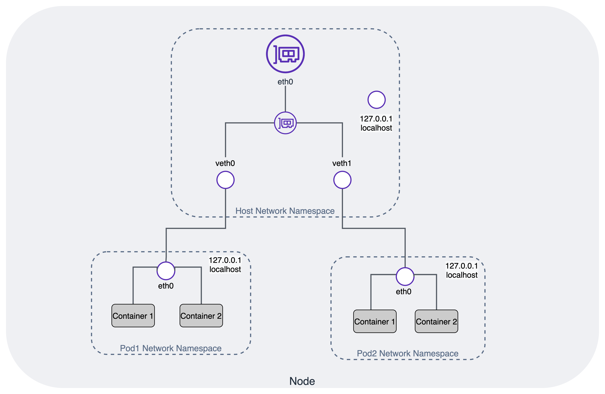

Amazon EKS 最佳實踐網路指南¶
了解 Kubernetes 網路是有效運行您的叢集和應用程式的關鍵。Pod 網路（也稱為叢集網路）是 Kubernetes 網路的核心。Kubernetes 支持 Container Network Interface (CNI) 插件進行叢集網路。
Amazon EKS 正式支持 Amazon Virtual Private Cloud (VPC) CNI 插件來實現 Kubernetes Pod 網路。VPC CNI 提供與 AWS VPC 的本地集成，並以底層模式工作。在底層模式下，Pod 和主機位於同一網路層並共享網路命名空間。從叢集和 VPC 的角度來看，Pod 的 IP 地址是一致的。
本指南介紹了在 Kubernetes 叢集網路上下文中的 Amazon VPC Container Network Interface(VPC CNI)。VPC CNI 是 EKS 支持的默認網路插件，因此是本指南的重點。VPC CNI 可高度配置以支持不同的用例。本指南還包括有關不同 VPC CNI 用例、操作模式和子組件的專門章節，最後是建議。
Amazon EKS 運行上游 Kubernetes 並經過 Kubernetes 一致性認證。儘管您可以使用替代 CNI 插件，但本指南不提供管理替代 CNI 的建議。請查看 EKS 替代 CNI 文檔以獲取管理替代 CNI 的合作夥伴和資源列表。
Kubernetes 網路模型¶
Kubernetes 對叢集網路設置以下要求：
- 同一節點上調度的 Pod 必須能夠相互通信，而無需使用 NAT（網絡地址轉換）。
- 在特定節點上運行的所有系統守護進程（後台進程，例如 kubelet）都可以與同一節點上運行的 Pod 通信。
- 使用 主機網路 的 Pod 必須能夠在不使用 NAT 的情況下與所有其他節點上的所有其他 Pod 聯繫。
有關 Kubernetes 預期的兼容網路實現的詳細信息，請參見 Kubernetes 網路模型。下圖說明了 Pod 網路命名空間和主機網路命名空間之間的關係。

Container Networking Interface (CNI)¶
Kubernetes 支持 CNI 規範和插件來實現 Kubernetes 網路模型。CNI 由 規範（當前版本 1.0.0）和用於編寫配置容器網絡接口的插件的庫組成，並支持多個插件。CNI 僅關注容器的網絡連接性以及在刪除容器時刪除分配的資源。
通過向 kubelet 傳遞 --network-plugin=cni 命令行選項來啟用 CNI 插件。kubelet 從 --cni-conf-dir（默認為 /etc/cni/net.d）讀取文件，並使用該文件中的 CNI 配置來設置每個 Pod 的網絡。CNI 配置文件必須符合 CNI 規範（最低版本 0.4.0），並且 --cni-bin-dir（默認為 /opt/cni/bin）目錄中必須存在任何所需的 CNI 插件。如果目錄中有多個 CNI 配置文件，kubelet 將使用按名稱以字典順序排序的第一個配置文件。
Amazon Virtual Private Cloud (VPC) CNI¶
AWS 提供的 VPC CNI 是 EKS 叢集的默認網路附加組件。VPC CNI 附加組件在您配置 EKS 叢集時默認安裝。VPC CNI 在 Kubernetes 工作節點上運行。VPC CNI 附加組件由 CNI 二進制文件和 IP 地址管理 (ipamd) 插件組成。CNI 從 VPC 網絡為 Pod 分配 IP 地址。ipamd 管理分配給每個 Kubernetes 節點的 AWS Elastic Networking Interfaces (ENIs)，並維護 IP 的預熱池。VPC CNI 提供了用於預分配 ENI 和 IP 地址的配置選項，以實現快速的 Pod 啟動時間。請參考 Amazon VPC CNI 了解推薦的插件管理最佳實踐。
Amazon EKS 建議您在創建叢集時指定至少兩個可用區的子網。Amazon VPC CNI 從節點子網中分配 IP 地址給 Pod。我們強烈建議檢查子網中是否有可用的 IP 地址。在部署 EKS 叢集之前，請考慮 VPC 和子網 的建議。
Amazon VPC CNI 從附加到節點主 ENI 的子網中分配一個預熱池的 ENI 和次要 IP 地址。這種 VPC CNI 模式稱為"次要 IP 模式"。IP 地址的數量和 Pod 密度由 ENI 的數量和每個 ENI 的 IP 地址限制（由實例類型定義）決定。次要模式是默認模式，適用於使用較小實例類型的小型叢集。如果您遇到 Pod 密度問題，請考慮使用 前綴模式。您還可以通過為 ENI 分配前綴來增加節點上 Pod 的可用 IP 地址。
Amazon VPC CNI 與 AWS VPC 本地集成，允許用戶應用現有的 AWS VPC 網絡和安全最佳實踐來構建 Kubernetes 叢集。這包括使用 VPC 流量日誌、VPC 路由策略和安全組進行網絡流量隔離的能力。默認情況下，Amazon VPC CNI 將與節點主 ENI 關聯的安全組應用於 Pod。在您希望為 Pod 分配不同的網絡規則時，請考慮啟用 Pod 安全組。
默認情況下，VPC CNI 從分配給節點主 ENI 的子網中為 Pod 分配 IP 地址。當運行數千個工作負載的大型叢集時，常常會遇到 IPv4 地址短缺的問題。AWS VPC 允許您通過分配二級 CIDR 來擴展可用的 IP。AWS VPC CNI 允許您為 Pod 使用不同的子網 CIDR 範圍。這個 VPC CNI 功能稱為自定義網絡。您可以考慮使用自定義網絡來使用 100.64.0.0/10 和 198.19.0.0/16 CIDR（CG-NAT）與 EKS 一起使用。這實際上允許您創建一個 Pod 不再消耗您的 VPC 中任何 RFC1918 IP 地址的環境。
自定義網絡是解決 IPv4 地址耗盡問題的一個選項，但需要操作開銷。我們建議使用 IPv6 叢集而不是自定義網絡來解決這個問題。具體來說，如果您已經完全耗盡了 VPC 的所有可用 IPv4 地址空間，我們建議您遷移到 IPv6 叢集。評估您組織支持 IPv6 的計劃，並考慮投資 IPv6 是否可能帶來更長遠的價值。
EKS 對 IPv6 的支持主要是為了解決有限 IPv4 地址空間造成的 IP 耗盡問題。為了解決客戶遇到的 IPv4 耗盡問題，EKS 將 IPv6 單棧 Pod 優先於雙棧 Pod。也就是說，Pod 可能能夠訪問 IPv4 資源，但不會從 VPC CIDR 範圍獲得 IPv4 地址。VPC CNI 將 IPv6 地址分配給 Pod，這些地址來自 AWS 管理的 VPC IPv6 CIDR 塊。
子網計算器¶
本項目包含一個 子網計算器 Excel 文檔。該計算器文檔模擬了在不同 ENI 配置選項（如 WARM_IP_TARGET 和 WARM_ENI_TARGET）下指定工作負載的 IP 地址消耗。該文檔包含兩個工作表，一個用於預熱 ENI 模式，另一個用於預熱 IP 模式。請查看 VPC CNI 指南以獲取有關這些模式的更多信息。
輸入: - 子網 CIDR 大小 - 預熱 ENI 目標 或 預熱 IP 目標 - 實例列表 - 類型、數量和每個實例調度的工作負載 Pod 數量
輸出: - 托管的總 Pod 數 - 消耗的子網 IP 數 - 剩餘的子網 IP 數 - 實例級別詳細信息 - 每個實例的預熱 IP/ENI 數量 - 每個實例的活動 IP/ENI 數量